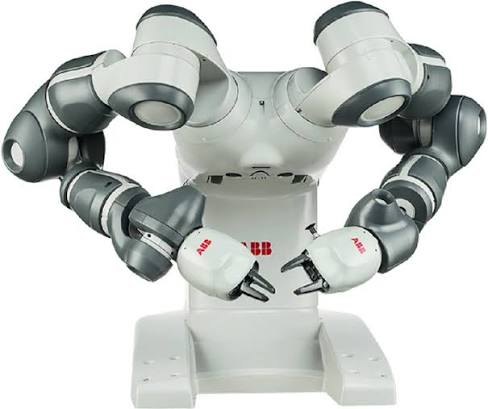
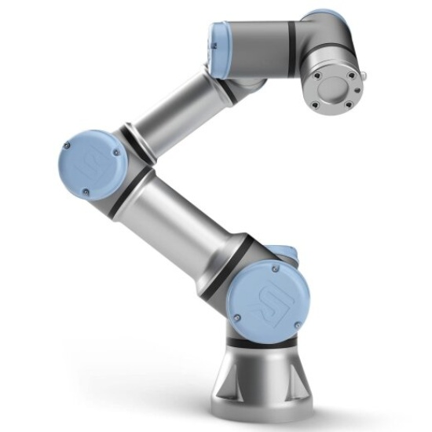
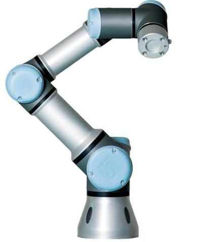
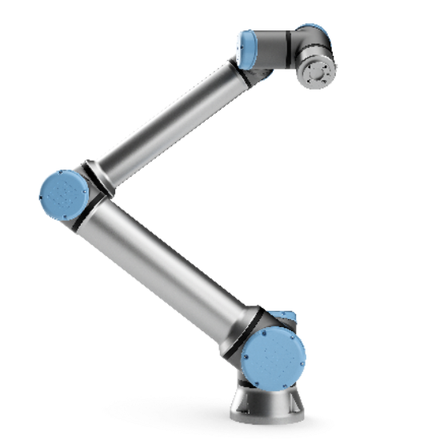

ABB YuMi IRB 14000
Dual-arm robot
A dual-arm collaborative robot designed for precise manipulation, bimanual coordination, and human-robot interaction.

Dual-arm robot
A dual-arm collaborative robot designed for precise manipulation, bimanual coordination, and human-robot interaction.

Six-axis robotic manipulator
A six-axis robot with integrated force-torque sensing, suitable for contact-rich manipulation, assembly, and force control research.

Six-axis robotic manipulator
A compact six-axis robot designed for precise manipulation, small-part handling, and motion control research.

Six-axis robotic manipulator
A six-axis robot with extended reach and higher payload capacity, suitable for manipulation, motion planning, and human–robot interaction research.

Six-axis industrial robotic manipulator
A compact six-axis industrial robot designed for precise manipulation, assembly, material handling, and motion control research.

High-speed parallel (delta) robot
A high-speed parallel robot designed for rapid pick-and-place operations, sorting, and high-throughput manipulation, suitable for motion planning and control research.

Six-axis industrial robotic manipulator
A high-performance six-axis industrial robot designed for precise manipulation, material handling, assembly, and motion control research.

Six-axis industrial robotic manipulator
A high-performance six-axis industrial robot with integrated cable routing, designed for precise arc welding, machine tending, and motion control applications.

Six-axis industrial robotic manipulator
A compact, high-performance six-axis industrial robot designed for precise manipulation, assembly, machine tending, and motion control research.

Optical motion capture system
A high-speed optical motion capture camera for precise 3D motion tracking, offering up to 340 fps, a measurement range of up to 15 m, and a 3D spatial resolution of 0.11 mm.

Active stereo RGB-D camera
An active stereo depth camera providing RGB images up to 1920 × 1080 at 30 fps and depth images up to 1280 × 720, with depth frame rates up to 90 fps, suitable for 3D perception and robotic manipulation.

LiDAR RGB-D camera
A LiDAR-based depth camera providing RGB images up to 1920 × 1080 and depth images up to 1024 × 768 at 30 fps, suitable for 3D object reconstruction and robotic perception.

Stereo RGB-D camera
A stereo depth camera supporting 1080p resolution at 30 fps, equipped with an integrated IMU and AI-based processing capabilities for 3D perception and object tracking.

RGB-D camera
An RGB-D camera providing color images up to 2592 × 1944 and depth images up to 640 × 480, suitable for 3D object perception and robotic vision applications.
High-resolution 3D structured-light scanner
A high-precision 3D scanner providing up to 3.2 million points per scan, a data throughput of 16 million points per second, a scanning range of 458–1118 mm, and a calibration accuracy of 0.1 mm, suitable for 3D object reconstruction, inspection, and robotic manipulation.

Optical 3D scanner
A professional portable 3D scanner designed for high-accuracy object digitization and dimensional inspection, offering a large measurement area for 3D reconstruction and geometric analysis.

Handheld 3D scanner
A lightweight, high-accuracy handheld 3D scanner supporting rapid object digitization and automatic scan alignment, suitable for geometric inspection and 3D model reconstruction.

Terrestrial 3D laser scanner
A 360° terrestrial laser scanner with a range of up to 45 m, a stated point accuracy of 4 mm at 10 m, and a scanning rate of 680,000 points per second, suitable for spatial mapping and 3D environment reconstruction.

Laser line profile sensor
A high-precision laser line profile sensor with a measurement width of 44 mm, 3,200 points per profile, and a stated accuracy of approximately ±12.3 µm, suitable for surface profiling, dimensional inspection, and object geometry measurement.

2D laser safety scanner
A 2D laser safety scanner providing a scanning range of up to 49 m and an angular resolution of 0.25°, suitable for obstacle detection, workspace monitoring, and safety-related applications.

Compact 2D laser scanner
A compact 2D laser scanner with a measurement range of up to 4 m and an angular resolution of 0.36°, suitable for obstacle detection, distance measurement, and robotic perception research.